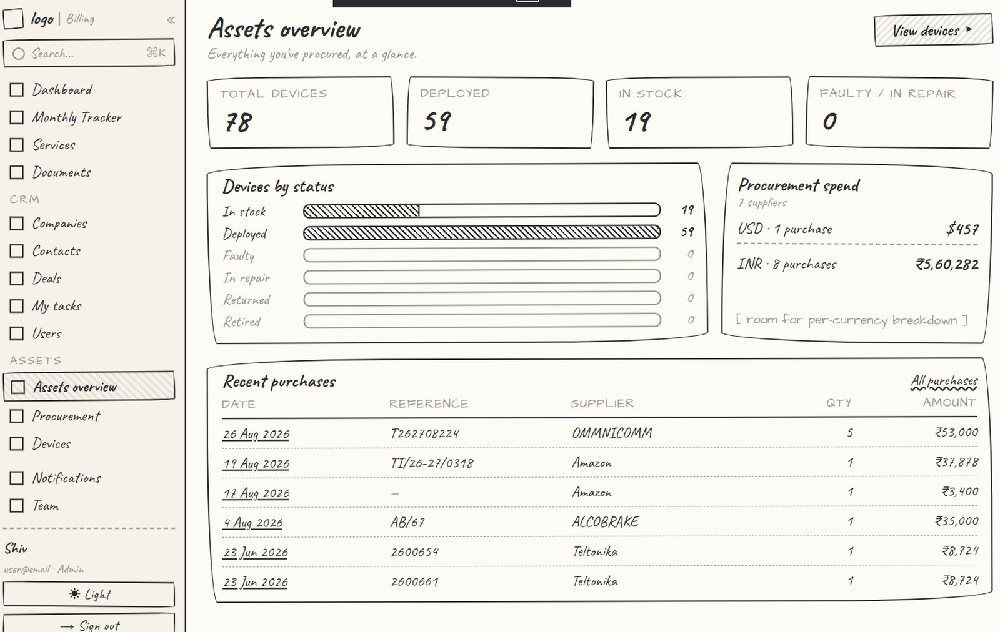
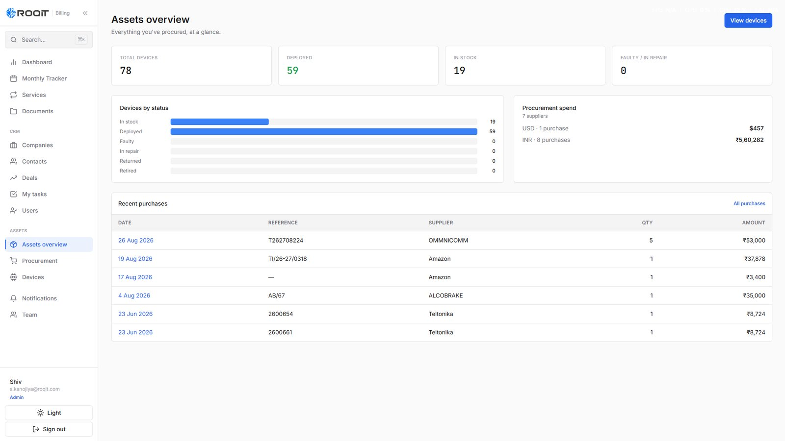
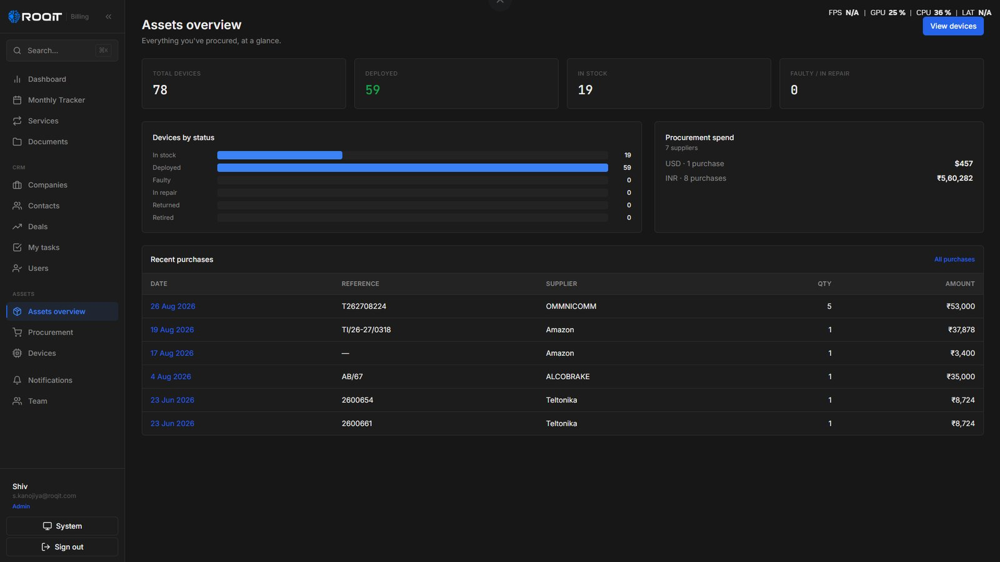
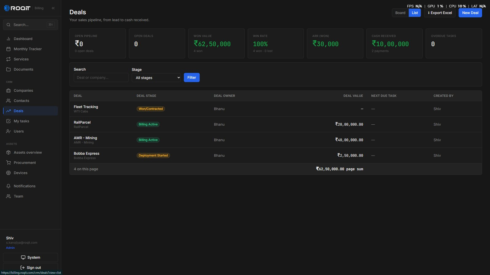
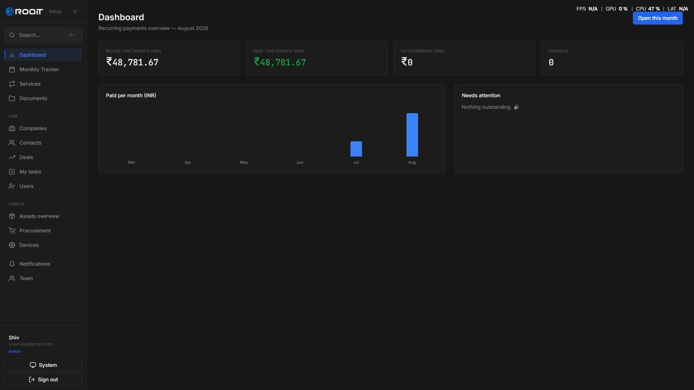
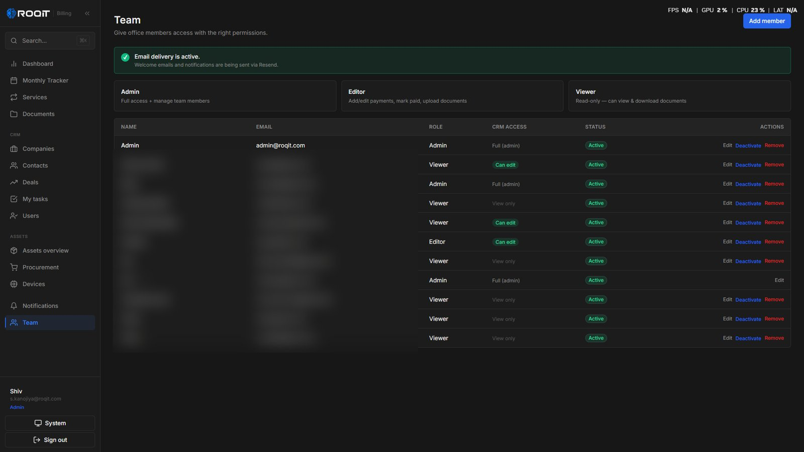

A CRM I designed and built solo — shipped in 15 days.
TL;DR Designed and built a full-stack, role-based CRM solo — replaced the spreadsheets running pipeline, billing & asset tracking. Shipped in 15 days, in daily use across four teams.
ROQIT ran its pipeline, billing, and asset tracking on shared spreadsheets that had stopped scaling. I designed and solo-built a full-stack platform to replace them — database, backend, hosting, email, and role-based auth — spanning the deals pipeline, recurring billing, and asset & procurement tracking, all behind role-based access for every team on it. Using AI to carry the research and ideation, I took it from blank page to deployed in 15 days.
The problem
A spreadsheet can track a pipeline for a while. Then two people edit the same row, no-one owns a follow-up, and the number leadership sees is already a day stale.
The company needed a real system — roles, alerts, invoicing, an audit trail — but not a six-month build or a per-seat SaaS bill for something this specific. Because I both design and ship in code, I could take it from spreadsheet to deployed product without a handoff, a backlog, or a translation loss between the two.
How it came together
A platform this broad would normally take weeks longer to build. With AI carrying the research and ideation, I shipped it in 15 days — without cutting the parts that matter.
I used AI to compress the slow parts — mapping each team’s workflow, pressure-testing the data model, drafting copy and edge cases — so my hours went into judgment: the schema, the role model, and the interface. Because I design and build in code, there was no handoff between the two.
Research, AI-assisted
Mapped how sales, accounts, and leadership actually work — and where the spreadsheet broke.
Wireframe
Blocked out every screen’s structure before styling — fast, throwaway, decisive.
Design system
Built components once, in light and dark, so every module stayed consistent.
Full-stack build
Database, backend, role-based auth, email, hosting — written and wired in code.
Ship & iterate
Live for four teams in 15 days, then refined against real daily use.



Key decisions
Designed and built it solo, end to end.
No handoff, no ticket queue. I moved from flows to schema to deployed app in one continuous loop, which is the only way a tool this cross-functional ships in a month. The design decisions and the data model were made by the same person, so they never fought each other.
Solo means the whole thing rests on one person — so I kept the stack boring and well-documented.Role-based views from the first screen.
A C-level user opening the CRM wants the pipeline number; a salesperson wants their next task; accounts wants what to invoice. Rather than one dense screen everyone tolerates, I designed the role into the auth layer, so each function lands on the view built for them.
More surfaces to design and secure, in exchange for four teams that actually adopted it.Invoicing, subscriptions, and alerts as first-class.
Real-time alerts and invoicing weren’t bolted on after launch — they were modeled into the schema up front, because they’re the parts that make people trust the tool over the spreadsheet they already know.
A heavier initial data model, in exchange for a system nobody wanted to route around.The platform



Outcome
A blank page to a deployed platform, solo, in 15 days — using AI to carry the research and ideation so my hours went to the schema, the role model, and the interface, where the judgment actually lives. It has been daily infrastructure since.
The impact is operational, not a vanity metric: leadership reads a live pipeline number instead of a day-stale spreadsheet, every follow-up has an owner, and billing runs off the same source of truth — in daily use across sales, accounts, product, and the C-suite since launch.
The benefit
The spreadsheets are gone. Leadership sees the real pipeline number, accounts sees exactly what to bill, and nobody pays a per-seat SaaS bill for it.
One source of truth across four functions, owned in-house and shaped to precisely how the company works — not a tool everyone routes around. And because it’s built in code by the person who designed it, a change is a same-day job, not a vendor ticket.